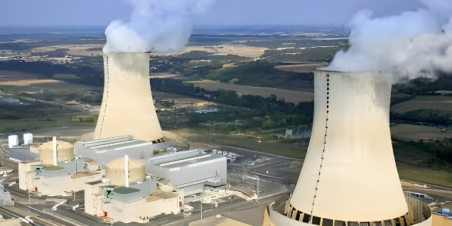

Depuis 2019, l'Espagne s'est engagée à fermer l'ensemble de ses sept réacteurs nucléaires entre 2027 et 2035. Mais le violent black-out du 28 avril 2025, qui a paralysé pendant près de dix heures une grande partie de la péninsule ibérique, a fracturé ce consensus : industriels, eurodéputés et jusqu'à une partie de la coalition gouvernementale réclament désormais un report. Pedro Sánchez tient le cap, mais sous une pression croissante.
La décision de sortir du nucléaire n'est pas nouvelle en Espagne. Elle s'inscrit dans une longue histoire : dès 1982, à la suite de l'arrivée au pouvoir du Parti socialiste (PSOE), un moratoire avait suspendu la construction de nouvelles centrales. En 1994, la loi sur l'organisation du système électrique avait définitivement arrêté ces projets. La rupture de 2019 constitue cependant l'acte fondateur de la politique actuelle : cette année-là, le gouvernement Sánchez a signé avec les quatre principaux opérateurs énergétiques — Iberdrola, Endesa, Naturgy et EDP — un accord de démantèlement progressif de l'ensemble du parc nucléaire.
Cet accord a ensuite été formalisé dans le Plan national intégré énergie-climat (PNIEC) et dans le 7e Plan général pour les déchets radioactifs, publié le 27 décembre 2023. Le calendrier prévoit une fermeture centrale par centrale : Almaraz I en novembre 2027, Almaraz II en octobre 2028, Ascó I et Cofrentes en 2030, Ascó II en 2032, puis Vandellós II et Trillo en 2035. Au terme du processus, l'Espagne ne disposera plus d'aucune centrale en activité. La stratégie de remplacement repose principalement sur le développement massif du solaire et de l'éolien — l'objectif gouvernemental fixe à 74 % la part des renouvelables d'ici 2030.
Le 28 avril 2025 à 12h38, la péninsule ibérique a subi l'une des pannes électriques les plus graves de son histoire. En quelques secondes, l'Espagne a perdu entre 2 000 et 15 000 MW de production, déclenchant une cascade de déconnexions automatiques qui a isolé le réseau ibérique du reste du continent européen. Près de dix heures ont été nécessaires pour rétablir l'alimentation, d'abord grâce aux interconnexions avec la France et le Maroc. Au moment de l'incident, trois réacteurs nucléaires (Trillo, Almaraz I et Cofrentes) étaient déjà déconnectés du réseau en raison d'une surproduction solaire qui avait fait chuter les prix de gros à zéro.
Les retranscriptions d'appels d'urgence passés au sein du centre de contrôle de Red Eléctrica, rendues publiques lors d'une audition au Sénat espagnol en mars 2026, ont alimenté la polémique : des opérateurs signalaient dès le 16 avril des tensions anormales sur le réseau, avec ces mots explicites — « c'est parce qu'il n'y a presque plus de nucléaire dans le système ». Si les experts débattent des causes réelles de la panne — beaucoup indiquent que ce sont avant tout les faiblesses infrastructurelles du réseau qui sont en cause, et non les renouvelables elles-mêmes —, l'événement a profondément réorienté le débat public. Selon un sondage réalisé après le black-out, 66 % des Espagnols se déclaraient favorables au maintien en service des centrales existantes, contre 43 % en 2023.
Accord entre le gouvernement Sánchez et les opérateurs (Iberdrola, Endesa, Naturgy, EDP) sur un démantèlement progressif du parc nucléaire entre 2025 et 2035. Intégration dans le PNIEC.
Publication du 7e Plan général pour les déchets radioactifs : calendrier précis de fermeture centrale par centrale, de 2027 à 2035.
Black-out massif en Espagne et au Portugal. Dix heures sans électricité pour des millions de foyers. Relance immédiate du débat sur l'avenir du nucléaire.
Iberdrola, Endesa et Naturgy adressent une lettre au ministère de la Transition écologique pour demander la prolongation d'Almaraz. Le gouvernement se dit « ouvert » sous conditions.
L'exploitant CNAT soumet une demande officielle au Conseil de sûreté nucléaire (CSN) pour prolonger Almaraz jusqu'en juin 2030. Le Parlement vote pour débattre d'un éventuel report.
Eurodéputés en visite à Almaraz. Bruxelles plaide pour la prolongation. L'Estrémadure réduit son écotaxe régionale pour peser dans les négociations avec Madrid.
La centrale nucléaire d'Almaraz, nichée en Estrémadure, est devenue le symbole de toutes les tensions. Première sur la liste des fermetures — Almaraz I doit s'arrêter en novembre 2027, Almaraz II en octobre 2028 —, elle concentre à elle seule 7 % de la production nationale d'électricité. Ses trois actionnaires (Iberdrola à 52,7 %, Endesa à 36 % et Naturgy à 11 %) ont déposé, le 30 octobre 2025, une demande officielle au CSN pour prolonger son exploitation jusqu'en juin 2030. Iberdrola attend toujours, en mai 2026, l'avis du régulateur avant la décision finale du ministère.
Les arguments en faveur d'une prolongation sont de plusieurs ordres. Le président d'Iberdrola, José Ignacio Sánchez Galán, a prévenu que la fermeture des centrales nucléaires entraînerait une hausse des prix de l'électricité de l'ordre de 25 à 30 % pour les consommateurs. Des estimations de Monitor Deloitte chiffrent à 14 milliards d'euros par an les économies qu'une prolongation permettrait à l'industrie de réaliser, tout en réduisant les prix de gros d'environ 15 €/MWh. Par ailleurs, la fiscalité pesant sur le nucléaire espagnol — qui représente désormais jusqu'à 40 % des coûts d'exploitation selon certains opérateurs — est jugée dissuasive et contribue à fragiliser économiquement les centrales.
| Centrale | Réacteur(s) | Fermeture prévue |
|---|---|---|
| Almaraz (Cáceres) | I et II | Nov. 2027 / Oct. 2028 |
| Ascó (Tarragone) | I | Oct. 2030 |
| Cofrentes (Valence) | Unique | Nov. 2030 |
| Ascó (Tarragone) | II | Sept. 2032 |
| Vandellós (Tarragone) | II | Févr. 2035 |
| Trillo (Guadalajara) | Unique | Mai 2035 |
Pedro Sánchez navigue dans des eaux agitées. Officiellement, il maintient que « l'accord de 2019 continuera d'être respecté », tout en admettant que des demandes de prolongation pourraient être examinées sous trois conditions strictes : garantie de sécurité nucléaire, contribution effective à la sécurité d'approvisionnement, et absence de coûts supplémentaires pour les consommateurs. Cette ouverture conditionnelle traduit une évolution notable depuis le black-out.
Au sein même de la coalition, les positions divergent. Sumar, partenaire de gauche du PSOE, s'oppose catégoriquement à toute prolongation : pour ce parti, « l'énergie nucléaire est coûteuse, polluante et nous éloigne d'une transition éco-sociale juste ». À l'inverse, le Parti populaire (PP), appuyé par Vox et bénéficiant de l'abstention du parti catalan Junts, a obtenu que le Parlement débatte d'un éventuel report — une première. Du côté européen, Bruxelles pousse en faveur des prolongations : le nucléaire est classifié comme énergie « verte » dans la taxonomie de l'UE, et plusieurs eurodéputés se sont rendus à Almaraz en février 2026 pour alerter sur les risques d'une fermeture prématurée.
« Notre pari, c'est les renouvelables. »
— Sara Aagesen, ministre de la Transition écologique, 2025« Si les centrales nucléaires ferment, nos analyses indiquent que les prix de détail augmenteront de 25 à 30 %. »
— José Ignacio Sánchez Galán, PDG d'Iberdrola, 2025Le débat espagnol sur le nucléaire dépasse la simple question technique. Il révèle une tension profonde entre deux légitimités : celle d'un engagement politique contractuel, signé avec les opérateurs et inscrit dans le droit, et celle d'une réalité physique du réseau que le black-out de 2025 a rendue brutalement visible. L'Espagne dispose certes d'atouts solaires et éoliens exceptionnels — en 2025-2026, les renouvelables ont fourni plus de 60 % de sa production. Mais son isolement électrique — les interconnexions avec la France demeurent insuffisantes — la prive du filet de sécurité dont bénéficient ses voisins. La décision finale sur Almaraz, attendue pour 2026, sera le premier test réel de la capacité du gouvernement Sánchez à concilier ambition climatique, sécurité énergétique et arithmétique budgétaire. Elle donnera aussi le ton pour les fermetures à venir, jusqu'en 2035.
Desde 2019, España se comprometió a cerrar sus siete reactores nucleares entre 2027 y 2035. Pero el violento apagón del 28 de abril de 2025, que paralizó durante casi diez horas gran parte de la península ibérica, fracturó ese consenso: industriales, eurodiputados e incluso parte de la coalición gubernamental reclaman ahora un aplazamiento. Pedro Sánchez mantiene el rumbo, pero bajo una presión creciente.
La decisión de salir del nuclear no es nueva en España. Se inscribe en una larga historia: ya en 1982, tras la llegada al poder del Partido Socialista (PSOE), una moratoria suspendió la construcción de nuevas centrales. En 1994, la ley de organización del sistema eléctrico puso fin definitivamente a esos proyectos. El punto de inflexión de 2019 es, sin embargo, el acto fundacional de la política actual: ese año, el gobierno Sánchez firmó con los cuatro principales operadores energéticos — Iberdrola, Endesa, Naturgy y EDP — un acuerdo de desmantelamiento progresivo de todo el parque nuclear.
Este acuerdo fue formalizado en el Plan Nacional Integrado de Energía y Clima (PNIEC) y en el 7.º Plan General de Residuos Radiactivos, publicado el 27 de diciembre de 2023. El calendario prevé el cierre central por central: Almaraz I en noviembre de 2027, Almaraz II en octubre de 2028, Ascó I y Cofrentes en 2030, Ascó II en 2032, y luego Vandellós II y Trillo en 2035. Al término del proceso, España no dispondrá de ninguna central operativa. La estrategia de sustitución se apoya principalmente en el despliegue masivo del solar y la eólica — el objetivo gubernamental fija en el 74 % la cuota de renovables para 2030.
El 28 de abril de 2025 a las 12:38, la península ibérica sufrió uno de los apagones eléctricos más graves de su historia. En cuestión de segundos, España perdió entre 2 000 y 15 000 MW de producción, desencadenando una cascada de desconexiones automáticas que aisló la red ibérica del resto del continente europeo. Fueron necesarias cerca de diez horas para restablecer el suministro, gracias en primer lugar a las interconexiones con Francia y Marruecos. En el momento del incidente, tres reactores nucleares (Trillo, Almaraz I y Cofrentes) ya estaban desconectados de la red debido a un exceso de producción solar que había hundido los precios mayoristas a cero.
Las transcripciones de llamadas de emergencia realizadas en el centro de control de Red Eléctrica, hechas públicas durante una comparecencia en el Senado en marzo de 2026, avivaron la polémica: operadores alertaban desde el 16 de abril de tensiones anómalas en la red, con palabras explícitas — «es porque ya casi no hay nuclear en el sistema». Si bien los expertos debaten las causas reales del apagón — muchos señalan que son las debilidades de infraestructura de la red las responsables, no las renovables en sí —, el evento reorientó profundamente el debate público. Según una encuesta posterior al apagón, el 66 % de los españoles se mostraba favorable a mantener en servicio las centrales existentes, frente al 43 % en 2023.
Acuerdo entre el gobierno Sánchez y los operadores (Iberdrola, Endesa, Naturgy, EDP) sobre el desmantelamiento progresivo del parque nuclear entre 2025 y 2035. Integración en el PNIEC.
Publicación del 7.º Plan General de Residuos Radiactivos: calendario preciso de cierre central por central, de 2027 a 2035.
Gran apagón en España y Portugal. Casi diez horas sin electricidad para millones de hogares. Relanzamiento inmediato del debate sobre el futuro del nuclear.
Iberdrola, Endesa y Naturgy envían una carta al Ministerio de Transición Ecológica solicitando la prórroga de Almaraz. El gobierno se declara «abierto» bajo condiciones.
El operador CNAT presenta una solicitud oficial ante el CSN para prorrogar Almaraz hasta junio de 2030. El Parlamento vota para debatir un posible aplazamiento.
Eurodiputados visitan Almaraz. Bruselas aboga por la prórroga. Extremadura reduce su ecotasa regional para influir en las negociaciones con Madrid.
La central nuclear de Almaraz, enclavada en Extremadura, se ha convertido en el símbolo de todas las tensiones. Primera en la lista de cierres — Almaraz I debe detenerse en noviembre de 2027, Almaraz II en octubre de 2028 —, concentra por sí sola el 7 % de la producción nacional de electricidad. Sus tres accionistas (Iberdrola con el 52,7 %, Endesa con el 36 % y Naturgy con el 11 %) presentaron, el 30 de octubre de 2025, una solicitud oficial ante el CSN para prorrogar su explotación hasta junio de 2030. Iberdrola sigue esperando, en mayo de 2026, el dictamen del regulador antes de la decisión final del ministerio.
Los argumentos a favor de una prórroga son de diversa índole. El presidente de Iberdrola, José Ignacio Sánchez Galán, advirtió que el cierre de las centrales nucleares provocaría una subida de los precios de la electricidad de entre el 25 y el 30 % para los consumidores. Estimaciones de Monitor Deloitte cifran en 14 000 millones de euros anuales el ahorro que una prórroga permitiría a la industria, al tiempo que reduciría los precios mayoristas en unos 15 €/MWh. La fiscalidad que pesa sobre el nuclear español — que representa hasta el 40 % de los costes de explotación según algunos operadores — se considera disuasoria y contribuye a fragilizar económicamente las centrales.
| Central | Reactor(es) | Cierre previsto |
|---|---|---|
| Almaraz (Cáceres) | I y II | Nov. 2027 / Oct. 2028 |
| Ascó (Tarragona) | I | Oct. 2030 |
| Cofrentes (Valencia) | Único | Nov. 2030 |
| Ascó (Tarragona) | II | Sept. 2032 |
| Vandellós (Tarragona) | II | Feb. 2035 |
| Trillo (Guadalajara) | Único | Mayo 2035 |
Pedro Sánchez navega en aguas turbulentas. Oficialmente, mantiene que «el acuerdo de 2019 seguirá respetándose», al tiempo que admite que las solicitudes de prórroga podrán estudiarse bajo tres condiciones estrictas: garantía de seguridad nuclear, contribución efectiva a la seguridad de suministro y ausencia de costes adicionales para los consumidores. Esta apertura condicional refleja una evolución notable desde el apagón.
Dentro de la propia coalición, las posturas divergen. Sumar, socio de izquierda del PSOE, se opone categóricamente a cualquier prórroga: para este partido, «la energía nuclear es cara, contaminante y nos aleja de una transición ecosocial justa». Por el contrario, el Partido Popular (PP), apoyado por Vox y con la abstención del partido catalán Junts, logró que el Parlamento debatiera un posible aplazamiento — una primera. En el plano europeo, Bruselas presiona a favor de las prórrogas: el nuclear está clasificado como energía «verde» en la taxonomía de la UE, y varios eurodiputados visitaron Almaraz en febrero de 2026 para alertar sobre los riesgos de un cierre prematuro.
« Nuestra apuesta son las renovables. »
— Sara Aagesen, ministra de Transición Ecológica, 2025« Si cierran las centrales nucleares, nuestros análisis indican que los precios minoristas subirán entre un 25 y un 30 %. »
— José Ignacio Sánchez Galán, presidente de Iberdrola, 2025El debate español sobre el nuclear trasciende la mera cuestión técnica. Revela una tensión profunda entre dos legitimidades: la de un compromiso político contractual, firmado con los operadores e inscrito en el derecho, y la de una realidad física de la red que el apagón de 2025 puso brutalmente de manifiesto. España cuenta con unos recursos solares y eólicos excepcionales — en 2025-2026, las renovables aportaron más del 60 % de su producción. Pero su aislamiento eléctrico — las interconexiones con Francia siguen siendo insuficientes — la priva de la red de seguridad de la que disfrutan sus vecinos. La decisión final sobre Almaraz, esperada en 2026, será el primer test real de la capacidad del gobierno Sánchez para conciliar ambición climática, seguridad energética y aritmética presupuestaria. Marcará también el tono de los cierres venideros, hasta 2035.